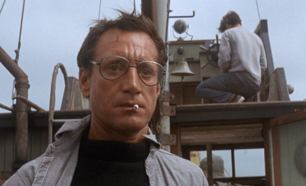
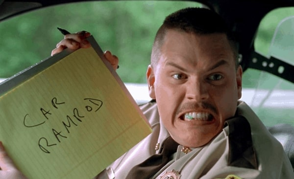
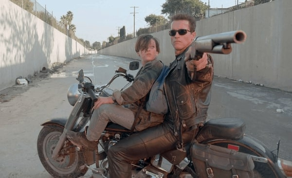
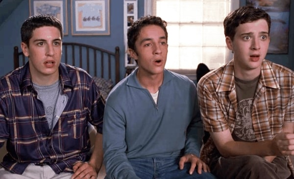
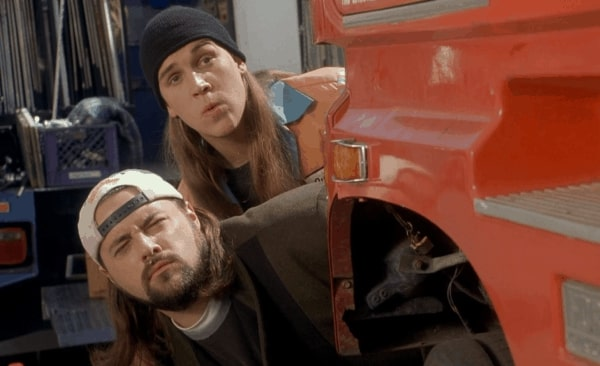
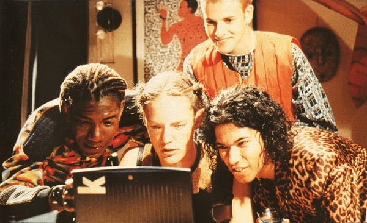
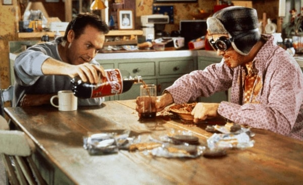

My Favorite Movies Growing Up
20 January 21
I believe that the films/movies we watch growing up directly affect our personalities long after adolescence. Below is my list of moving pictures that, in some way, helped shape me into a unique human being.
10. Jaws (1975)
I'm forever terrified of the ocean because of this movie.
9. Blow (2001)
8. Super Troopers (2001)
7. The Butterfly Effect (2004)
6. Walk the Line (2005)

5. Terminator 2: Judgment Day (1991)
4. American Pie (1999)
3. Jay and Silent Bob Strike Back (2001)
2. Hackers (1995)
This movie is solely responsible for kickstarting my programming/hacking fascination.
1. Multiplicity (1996)
Hands down, my all-time favorite movie. Michael Keaton's character "Four"/Lenny was brilliant and hilarious.
